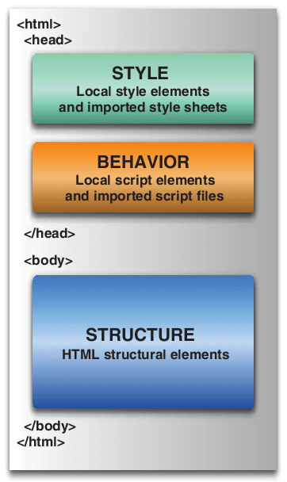
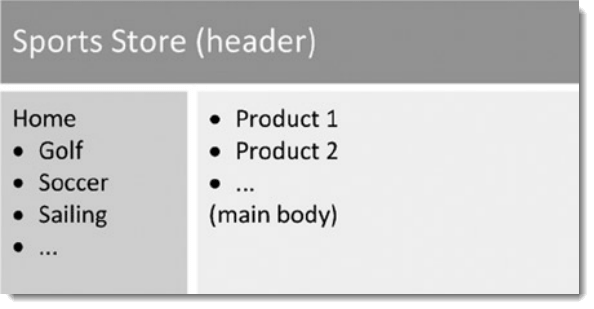

课堂教学
作为通信专业的选修课，以专题的形式涉及HTML5、Angularjs、Nodejs以及移动App开发框架Ionic等内容。
作为通信专业的选修课，以专题的形式涉及HTML5、Angularjs、Nodejs以及移动App开发框架Ionic等内容。
工欲善其事，必先利其器。
下载Webstorm软件以及注册机并安装。
以超级用户运行注册机或使用如下注册信息。
以下为注册信息（注意，License Key以下需原样拷贝）：
User Name:
EMBRACE
License Key:
===== LICENSE BEGIN =====
90422-12042010
000026Aq9zLyMWKB7qjbUAqdz7CUcn
end65Lcear9Lgq!7c2ApwLqrpe!CCK
s"4FdSXxD7XOcK0crrskU3YdMtbnGI
===== LICENSE END =====
运行Webstorm，在File->Setting菜单中，在其左面选项中选择Appearance&Behavior->Appearance->Theme中选择其推荐的黑色Darcula主题，并勾选Override
default fonts by (not recommended) name，选择微软雅黑作为界面字体。
仍在Setting界面中，选择左面Editor->colors&fonts选项，另存Darcula主题为其它任意名称，然后选择colors&fonts下的fonts菜单，选择
source code pro作为编辑界面字体字体。
Webstorm是以Project的方式进行网站的管理的，因此必须New Project。
然后右键点击项目名称建立所需要的文件及目录即可。常见网站目录结构如下：

一个网页就好像一幢房子，HTML结构就是钢筋混泥土的墙，一幢房子如果没有钢筋混泥土的墙那就是一堆废砖头，也就称不上是房子了。 CSS是装饰材料，是油漆，是用来装饰房子的。CSS如果没有HTML结构那也就什么都不是了，没有了实际使用价值。 而JavaScript就是房屋的开关，用来进行互动，产生动态效果。下图说明了这种关系。

HTML是超文本标记语言（HyperText Markup Language）的缩写，是为“网页创建和其它可在网页浏览器中看到的信息”设计的一种标记语言。
通常我们需要掌握的标记/标签不多，如常见的body、head、title、h1、p、img、a、div、span、ol、table等。请注意如font、big、center等标签是不推荐使用的。
学习HTML、CSS、JS、AngularJS以及Ionic等请访问菜鸟-领先的Web技术教程，或者直接下载其W3School离线手册(2015版)
HTML5规范摒弃了一些不合适的标签，同时引入了一些有效率、表达明确的标签如：
header、footer、section、article、aside、nav等。相关内容请查看网络资料。
在WebStorm中输入或复制如下HTML代码，我们稍作探究并在无CSS的情况下看看效果，并学习Chrome开发者工具的使用。
<!DOCTYPE html>
<html>
<head>
<meta charset="utf-8">
<title>HTML5</title>
<link rel="stylesheet" href="./css/html5.css">
</head>
<body>
<header>
<h1>头部</h1>
<h2>子标题</h2>
<h4>震撼HTML5</h4>
</header>
<div class="container">
<nav>
<h3>导航</h3>
<a href="http://www.google.com">Google</a>
<a href="http://www.baidu.com" target="_blank">百度</a>
<a href="http://www.dapenti.com" target="_blank">打喷嚏</a>
</nav>
<section>
<article>
<header>
<h1>文章头部</h1>
</header>
<ol>
<li>当一个人只为维持生计而思维的时候，他的思想就难以高尚。 ——卢梭</li>
<li>衣不如新，人不如旧</li>
<li>井蛙不可语天，夏虫不可语冰</li>
<li>有党性，没人性</li>
</ol>
<footer>
<h2>
文章底部
</h2>
</footer>
</article>
<article>
<header>
<h1>文章头部</h1>
</header>
<p>
1. 不想解决人民提出的问题，老想解决提出问题的人民。
2. 要不是美领馆按pm2.5标准向外公布空气检测结果，我们肯定还生活在“现在播报新闻，冬季来临，全国大部地区全天有大雾，空气质量良”的世界里。
3. 某男问大师：“大师，我女朋友虽有优点，但缺点让我难以忍受，怎样才能让她只有优点没有缺点呢？”大师笑答：“方法很简单，不过若要我教你，你得先下山为我找一张只有正面没反面的纸回来。” 该男略一沉吟下山而去，很快又上山来，递给大师一张“人民日报” 。大师看后，从此遁入空门，不再过问世事。
4. 人民对领导人情感的强烈程度，往往与领导人的牛逼程度无关，而是与人民的傻逼程度及国家的封闭程度成正比！
</p>
<footer>
<h2>
文章底部
</h2>
</footer>
</article>
</section>
<aside>
<h3>边条</h3>
<p>
agony痛苦——爱过你； pregnant怀孕——扑来个男的； ambulance救护车——俺不能死； ponderous肥胖的——胖的要死； pest害虫——拍死它； ambition雄心——俺必胜； bale灾祸——背噢； admire羡慕——额的妈呀
</p>
</aside>
<footer>
<h2>底部</h2>
</footer>
</div>
</body>
</html>
CSS即层叠样式表（Cascading Style Sheets）。用于修饰Web页面。如上，没有用CSS样式表的HTML惨不忍睹，我们添加如下代码后后探究一下
body{
background-color: #cccccc;
font-family: "Microsoft Yahei","SimHei";
margin: 0 auto;
max-width: 900px;
border: solid #FFFFFF;
}
header{
background: #F47D31;
display: block;
color: #FFFFFF;
text-align: center;
}
header h2{
margin: 0;
}
h1{
font-size: 72px;
margin: 0;
}
h2{
font-size: 24px;
margin: 0;
text-align: center;
/*color: #F47D31;*/
}
h3{
font-size: 18px;
margin: 0;
text-align: center;
color: #F47D31;
}
h4{
color: #F47D31;
background-color: #FFFFFF;
-webkit-box-shadow:2px 2px 20px #888;
-webkit-transform:rotate(-45deg);
-moz-box-shadow: 2px 2px 20px #888;
-moz-transform:rotate(-45deg);
position: absolute;
padding: 0 150px;
top: 50px;
left: -120px;
text-align: center;
}
nav{
display: block;
width:25%;
float:left;
}
nav a:link, nav a:visited{
display:block;
color: #F47D31;
border-bottom: 3px solid #FFFFFF;
padding: 10px;
text-decoration: none;
font-weight: bold;
margin: 5px;
}
nav a:hover{
color: white;
background-color: #F47D31;
}
nav h3{
margin: 15px;
color: white;
}
.container{
background-color: #888888;
}
section{
display: block;
width: 50%;
float:left;
}
article{
background: #eee;
display: block;
margin: 10px;
padding: 10px;
/*
-webkit-border-radius: 10px;
-moz-border-radius: 10px;
*/
border-radius: 10px;
/*-webkit-box-shadow:2px 2px 20px #888;*/
/*-webkit-transform:rotate(-10deg);*/
/*-moz-box-shadow:2px 2px 20px #888;*/
/*-moz-transform:rotate(-10deg);*/
transform:rotate(-10deg);
box-shadow: 2px 2px 20px #888;
}
article header{
border-radius: 10px;
padding: 5px;
}
article footer{
border-radius: 10px;
padding: 5px;
}
article h1{
font-size: 18px;
}
aside {
display: block;
width: 25%;
float: left;
}
aside h3{
margin: 15px;
color: white;
}
aside p{
margin: 15px;
color: white;
font-weight: bold;
font-style: italic;
}
footer{
clear:both;
display: block;
background: #F47D31;
color: #FFFFFF;
text-align: center;
padding: 15px;
}
footer h2{
font-size: 14px;
color: white;
}
你看到的效果应如下所示

请跟随HTML 5 and CSS 3: The Techniques You’ll Soon Be Using的指南构建另一个应用HTML5技术的网站，效果如下:

简洁、直观、强悍的前端开发框架，让web开发更迅速、简单。漂亮的Web页面不仅要求掌握CSS，同时还需要有足够的美感，对我等没有艺术细胞的开发者而言，2011年8月20日Bootstrap的出现以及开源就迎来了春天！
如果你以为上面的两个页面还可以的话，请移步翁天信看看效果。
更多的案例请看Bootstrap优秀网站Show
我们如何能做到？请移步Bootstrap中文网学习。该网站紧跟英文文档，提供最新信息。
Bootstrap3.3.5下载 以及Jquery下载 。下面介绍其起步文档中需要注意的基础知识。
<!DOCTYPE html>
<html lang="zh-CN">
<head>
<meta charset="utf-8">
<meta http-equiv="X-UA-Compatible" content="IE=edge">
<!-- 移动设备的参数设定-->
<meta name="viewport" content="width=device-width, initial-scale=1">
<!-- 上述3个meta标签*必须*放在最前面，任何其他内容都*必须*跟随其后！ -->
<title>Bootstrap 101 Template</title>
<!-- 导入Bootstrap样式文件 -->
<link href="css/bootstrap.min.css" rel="stylesheet">
<!-- HTML5 shim and Respond.js for IE8 support of HTML5 elements and media queries -->
<!-- WARNING: Respond.js doesn't work if you view the page via file:// -->
<!--[if lt IE 9]>
<script src="//cdn.bootcss.com/html5shiv/3.7.2/html5shiv.min.js"></script>
<script src="//cdn.bootcss.com/respond.js/1.4.2/respond.min.js"></script>
<![endif]-->
</head>
<body>
<h1>你好，世界！</h1>
<!-- jQuery (使用Bootstrap的JS插件必须的支持) -->
<script src="jquery/1.11.3/jquery.min.js"></script>
<!-- Bootstrap的JS插件 -->
<script src="js/bootstrap.min.js"></script>
</body>
</html>
基础的JavaScript学习请参见W3school-领先的Web技术教程或W3C菜鸟教程（每个人都有菜的时候） ，或者直接下载其
chm格式学习文档，更进一步的学习请下载
JavaScript高级程序设计、
JavaScript权威指南(第6版)(中文版)以及
JavaScript语言精粹_修订版这3本书，网上其它的这方面书都有滥竽充数的嫌疑。
运行JavaScript有多种方式，可以直接在控制台编写运行，也可以用第3方编辑软件如sublime结合Node运行，但我们最常用的是编写一个独立的js文件，然后在Html文件中引入。
因为JavaScript是我们前后端编程的基础，所以下面对JavaScript进行概要介绍
大小写敏感
标识符
注释
语句
关键字/保留字
变量
var message;
这行代码定义了一个名为 message 的变量，该变量可以用来保存任何值。下示代码合法但不推荐：
var message = 'Hi, JavaScript';
console.log(message);
message = 100;
console.log(message);
function test(){
var message = "hi"; // 局部变量，去掉var即为全局变量
}
test();
alert(message); // 错误！
一元操作符 ++ --
布尔操作符 && || ！
&&和||都属于短路操作！
算术操作符 + - * / %
var result = 5 + '5'; // 一个数值和一个字符串相加
alert(result); // '55'
//============================================
var num1 = 5;
var num2 = 10;
var message = "The sum of 5 and 10 is " + num1 + num2;// (num1 + num2)
alert(message); // "The sum of 5 and 10 is 510"
关系操作符 < > <= >= == === != !==
var x = 5;
console.log(x == 5);
console.log(x == '5');
console.log(x === 5);
console.log(x === '5');
条件（问号）操作符 ? :
var max = (num1 > num2) ? num1 : num2;
赋值操作符 = += -+ *= /= %=
if do-while while for for-in break continue switch
var colors = ['red', 'green', 'blue', 'brown'];
for(var c in colors){
console.log(colors[c]);
}
函数对任何语言来说都是一个核心的概念。通过函数可以封装任意多条语句，而且可以在任何地方、 任何时候调用执行。以下是一个函数示例：
function sayHi(name, message) {
console.log("Hello " + name + "," + message);
}
sayHi('Gridwang', '你好。');
ECMAScript 中的函数在定义时不必指定是否返回值。实际上，任何函数在任何时候都可以通过 return 语句后跟要返回的值来实现返回值。请看下面的例子：
function sum(num1, num2) {
return num1 + num2;
}
var result = sum(3, 2);
console.log(result);
ECMAScript 函数不介意传递进 来多少个参数，也不在乎传进来参数是什么数据类型。也就是说，即便你定义的函数只接收两个参数， 在调用这个函数时也未必一定要传递两个参数。可以传递一个、三个甚至不传递参数，而解析器永远不 会有什么怨言。之所以会这样，原因是 ECMAScript 中的参数在内部是用一个数组来表示的。函数接收 到的始终都是这个数组，而不关心数组中包含哪些参数（如果有参数的话）。如果这个数组中不包含任 何元素，无所谓；如果包含多个元素，也没有问题。
如果在 ECMAScript中定义了两个名字相同的函数，则该名字只属于后定义的函数。请看下面的例子：
function addSomeNumber(num){
return num + 100;
}
function addSomeNumber(num) {
return num + 200;
}
var result = addSomeNumber(100); //300
对象Object 是ECMAScript 中使用最多的一个类型。我们常将数据和方法封装在对象中。
创建对象有如下两种方式，我们常用第二种。
//方式一
var person = new Object();
person.name = "Nicholas";
person.age = 29;
person.job = "Software Engineer";
person.sayName = function(){ //注意此处
console.log(this.name);
};
//方式二
var person = {
name: "Nicholas",
age: 29,
job: "Software Engineer",
sayName: function(){ //注意此处
console.log(this.name);
}
};
console.log(person.job);
person.sayName();
虽然 Object 构造函数或对象字面量都可以用来创建单个对象，但这些方式有个明显的缺点：使用同 一个接口创建很多对象，会产生大量的重复代码。为解决这个问题，人们开始使用工厂模式的一种变体。代码如下：
function createPerson(name, age, job){
var o = new Object();
o.name = name;
o.age = age;
o.job = job;
o.sayName = function(){
alert(this.name);
};
return o;
}
var person1 = createPerson("Nicholas", 29, "Software Engineer");
var person2 = createPerson("Greg", 27, "Doctor");
除了 Object 之外， Array 类型恐怕是 ECMAScript 中最常用的类型了。而且，ECMAScript 中 的数组与其他多数语言中的数组有着相当大的区别。虽然 ECMAScript 数组与其他语言中的数组都是 数据的有序列表，但与其他语言不同的是，ECMAScript 数组的每一项可以保存任何类型的数据。也 就是说，可以用数组的第一个位置来保存字符串，用第二位置来保存数值，用第三个位置来保存对象， 以此类推。而且，ECMAScript 数组的大小是可以动态调整的，即可以随着数据的添加自动增长以容 纳新增数据。
创建数组有以下两种方法，我们常用第二种。
//方式一
var colors = new Array("red", "blue", "green");
//方式二
var colors = ["red", "blue", "green"]; // 创建一个包含 3 个字符串的数组
console.log(colors[1]);
colors[3] = 'brown';
console.log(colors.length);
var names = []; // 创建一个空数组
var hyBird = [1, 2, 'haha', {firstName: 'Yong', lastName: 'Wang'}];
console.log(hyBird[3].firstName);
常用的数组方法如下：
元素联合
var colors = ["red", "green", "blue"];
alert(colors.join(",")); //red,green,blue
alert(colors.join("||")); //red||green||blue
堆栈方法
栈是一种 LIFO（Last-In-First-Out， 后进先出）的数据结构，也就是最新添加的项最早被移除。而栈中项的插入（叫做推入）和移除（叫做 弹出），只发生在一个位置——栈的顶部。ECMAScript 为数组专门提供了 push() 和 pop() 方法，以便 实现类似栈的行为。
var colors = []; // 创建一个数组
var count = colors.push("red", "green"); // 推入两项
console.log(count); //2
colors.push("black"); // 推入另一项
console.log(colors); //3
var item = colors.pop(); // 取得最后一项
console.log(item); //"black"
console.log(colors); //2
队列方法
栈数据结构的访问规则是 LIFO（后进先出），而队列数据结构的访问规则是 FIFO（First-In-First-Out， 先进先出）。队列在列表的末端添加项，从列表的前端移除项。由于 push() 是向数组末端添加项的方法， 因此要模拟队列只需一个从数组前端取得项的方法。实现这一操作的数组方法就是 shift() ，它能够移 除数组中的第一个项并返回该项，同时将数组长度减 1。
var colors = new Array(); //创建一个数组
colors.push("red", "green"); //推入两项
console.log(count); //2
count = colors.push("black"); //推入另一项
console.log(count); //3
var item = colors.shift(); // 取得第一项
console.log(item); //"red"
console.log(colors);
ECMAScript 还为数组提供了一个 unshift() 方法。它能在数组前端添加任意个项并返回新数组的长度。
var colors = new Array(); //创建一个数组
var count = colors.unshift("red", "green"); // 推入两项
console.log(colors);
count = colors.unshift("black"); // 推入另一项
console.log(colors);
var item = colors.pop(); // 取得最后一项
console.log(item); //"green"
console.log（colors);
总结：由上可知，push、pop操作在数组末，而unshift、shift操作在数组头。
反转数组项
var values = [1, 2, 3, 4, 5];
values.reverse();
console.log(values); //5,4,3,2,1
链接方法
var colors1 = ["red", "green", "blue"];
var colors2 = ['yellow', 'black'];
console.log(colors1.concat(colors2));
console.log(colors2.concat(colors1));
console.log(colors2.concat('brown'));//注意：原数组没改变
分片方法
slice() ，它能够基于当前数组中的一或多个项创建一个新数组。 slice() 方法可以 接受一或两个参数，即要返回项的起始和结束位置。在只有一个参数的情况下， slice() 方法返回从该 参数指定位置开始到当前数组末尾的所有项。如果有两个参数，该方法返回起始和结束位置之间的项— —但不包括结束位置的项。注意， slice() 方法不会影响原始数组。
var colors1 = ["red", "green", "blue", "yellow", "purple"];
var colors2 = colors1.slice(1);
var colors3 = colors1.slice(2, 4);
var colors4 = colors1.slice(2, 2);//结果是什么？
console.log(colors1);
console.log(colors2);
console.log(colors3);
splice方法
splice() 方法恐怕要算是最强大的数组方法了，它有很多种用法。 splice() 的主要用途是向数组的中部插入项，但使用这种方法的方式则有如下 3 种。
删除：可以删除任意数量的项，只需指定 2 个参数：要删除的第一项的位置和要删除的项数。 例如， splice(0,2) 会删除数组中的前两项。
插入：可以向指定位置插入任意数量的项，只需提供 3 个参数：起始位置、0（要删除的项数） 和要插入的项。如果要插入多个项，可以再传入第四、第五，以至任意多个项。例如， splice(2,0,"red","green") 会从当前数组的位置 2 开始插入字符串 "red" 和 "green" 。
替换：可以向指定位置插入任意数量的项，且同时删除任意数量的项，只需指定 3 个参数：起 始位置、要删除的项数和要插入的任意数量的项。插入的项数不必与删除的项数相等。例如， splice (2,1,"red","green") 会删除当前数组位置 2 的项，然后再从位置 2 开始插入字符串 "red" 和 "green" 。
var colors = ["red", "green", "blue"];
var removed = colors.splice(0,1); // 删除第一项
alert(colors); // green,blue
alert(removed); // red，返回的数组中只包含一项
removed = colors.splice(1, 0, "yellow", "orange"); // 从位置 1 开始插入两项
alert(colors); // green,yellow,orange,blue
alert(removed); // 返回的是一个空数组
removed = colors.splice(1, 1, "red", "purple"); // 插入两项，删除一项
alert(colors); // green,red,purple,orange,blue
alert(removed); // yellow，返回的数组中只包含一项
链式语法已变得非常流行。实际上这是一种非常容易实现的模式。基本上，你只需要让每个函数返回 this代表该函数，这样其他函数就可以立即被调用。看看下面的例子。
var bird = {
catapult: function() {
console.log( "Yippeeeeee!" );
return this;
},
destroy: function() {
console.log( "That'll teach you... you dirty pig!" );
return this;
}
};
bird.catapult().destroy();//链式语法
闭包是什么?闭包是Closure，这是静态语言所不具有的一个新特性。但是闭包也不是什么复杂到不可理解的东西，简而言之，闭包就是：
函数的局部变量集合，只是这些局部变量在函数返回后会继续存在。
闭包就是就是函数的“堆栈”在函数返回后并不释放，我们也可以理解为这些函数堆栈并不在栈上分配而是在堆上分配
当在一个函数内定义另外一个函数就会产生闭包。如下代码：
function greeting(name) {
var text = 'Hello ' + name; // local variable
// 每次调用时，产生闭包，并返回内部函数对象给调用者
return function() { console.log(text); }//注意该函数无名称，称为匿名函数
}
var sayHello = greeting("Closure");//调用greeting()返回了什么？
sayHello(); // 注意此处的使用方法。通过闭包访问到了局部变量text
上述代码的执行结果是：Hello Closure，因为sayHello指向了greeting函数对象，sayHello()则对其进行调用，greeting函数执行完毕后将返回greeting函数内定义的匿名函数对象，而该匿名函数仍然可以访问到了定义在greeting之内的局部变量text，注意此时我们已从greeting函数中退出了（但请留意，也只有该内部匿名函数能访问，其它任何代码都不能访问）。以下是另外一个例子：
var scope = 'global scope'; //全局变量
function checkScope(){
var scope = 'local scope'; //局部变量
function f(){
return scope;
}
return f;
}
checkScope()(); //注意此处的使用方法。返回值为local scope而非global scope
HTML5提供的Canvas（画布）API可用于很容易的创建2D/3D的图形、图像以及动画，当然这需要JavaScript的支持。
HTML5技术（注意非flash）的2D植物大战僵尸和3D俄罗斯方块游戏以及Canvas时钟 。
我们以画一条线开始，代码如下：
<!DOCTYPE html>
<html>
<head>
<title>Canvas</title>
</head>
<body>
<canvas id="diagonal" style="border: 1px solid;" width="200px" height="200px">Opps!</canvas>
<script>
function drawDiagonal(){
//取得Canvas元素及其绘图上下文
var canvas=document.getElementById('diagonal');
var context = canvas.getContext('2d');
//用绝对坐标创建一条路径
context.beginPath();
context.moveTo(70, 140);
context.lineTo(140, 70);
//正式绘制
context.stroke();
}
window.addEventListener("load", drawDiagonal, true);
</script>
</body>
</html>
效果如下：
下面再看一个较复杂的实例，效果如下，请阅读以下代码：
<!DOCTYPE html>
<html>
<head>
<meta charset="utf-8" />
<title>Canvas</title>
</head>
<body>
<canvas id="trails" style="border: 1px solid;" width="400px" height="400px">Opps!</canvas>
<script>
function createCanopyPath(context){
context.beginPath();
//树冠
context.moveTo(-25, -50);
context.lineTo(-10, -80);
context.lineTo(-20, -80);
context.lineTo(-5, -110);
context.lineTo(-15, -110);
//树顶点
context.lineTo(0, -140);
context.lineTo(15, -110);
context.lineTo(5, -110);
context.lineTo(20, -80);
context.lineTo(10, -80);
context.lineTo(25, -50);
//连接起点，闭合路径
context.closePath();
}
function drawTrails(){
var canvas = document.getElementById('trails');
var context = canvas.getContext('2d');
context.save();
context.translate(130, 250);
//调用，绘制树冠
createCanopyPath(context);
context.lineWidth = 4;
context.lineJoin = 'round';
context.strokeStyle = '#663300';
context.stroke();
context.fillStyle = '#339900';
context.fill();
context.fillStyle = '#663300';
context.fillRect(-5, -50, 10, 50);
context.restore();
//绘制小路
context.save();
context.translate(-10, 350);
context.beginPath();
context.moveTo(0, 0);
context.quadraticCurveTo(170,-50,260,-190);
context.quadraticCurveTo(310,-250,410,-250);
context.strokeStyle = '#663300';
context.lineWidth = 20;
context.stroke();
context.restore();
//文字
context.save();
context.font = "60px 'Microsoft Yahei'";
context.fillStyle = '#996600';
context.textAlign = 'center';
context.shadowColor = 'rgba(0,0,0,0.2)';
context.shadowOffsetX = 15;
context.shadowOffsetY = -10;
context.shadowBlur = 2;
context.fillText('快乐马拉松', 200, 60, 400);
context.restore();
}
window.addEventListener("load", drawTrails, true);
</script>
</body>
</html>
Canvas（画布）是基于像素（栅格）的图形、图像以及动画，而SVG（Scalable Vector Graphics，可缩放矢量图形）是基于矢量的，两者的区别你放大图形即可知晓。
SVG实例一，效果和代码如下：
<!--设置SCG画布-->
<svg width=200 height=200>
<!--//g标签将以下图形组合为Group进行变换，以下分别是移动、旋转和缩放-->
<g transform="translate(60,0) rotate(30) scale(0.75)" id="shapeGroup1">
<!--//矩形：起点、宽高、边框、填充-->
<rect x=10 y=20 width=100 height=80 stroke=red fill=#ccc />
<circle cx=120 cy=80 r=40 stroke=#00f fill=none stroke-width=8 />
</g>
</svg>
SVG实例二，效果和代码如下：
<svg width="200" height="200">
<!--预定义，准备重复使用-->
<defs>
<g id="shapeGroup2">
<rect x="10" y="20" width="100" height="80" stroke="red" fill="#ccc" />
<circle cx="120" cy="80" r="40" stroke="#00f" fill="none" stroke-width="8" />
</g>
</defs>
<!--//重复使用-->
<use xlink:href="#shapeGroup2" transform="translate(60,0) scale(0.5)" />
<use xlink:href="#shapeGroup2" transform="translate(120,80) scale(0.4)" />
<use xlink:href="#shapeGroup2" transform="translate(20,60) scale(0.25)" />
</svg>
在Mozilla开发者网络中有大量示例请自行研究。 以下是一个以SVG等技术做出的演示太阳系的漂亮示例，截图效果如下：

在Web页面中播放音视频的典型方式为：Flash、QuickTime、Windows Media插件，而HTML5是直接提供的 原生支持，无需这些插件，同时提供了通用、集成以及可JavaScript控制的API，开发人员尤其钟情。
下面是一个音频播放的效果及代码，请参阅教材了解更多：
<audio controls>
<source src="../assets/av/johann_sebastian_bach_air.mp3">
<source src="../assets/av/johann_sebastian_bach_air.ogg">
巴赫的舒缓音乐
</audio>
下面是一个视频播放的效果及代码，请参阅教材了解更多：
<video controls autobuffer="true" width="850px" poster="../assets/img/poster.jpg">
<source src="../assets/av/oceans.mp4">
不支持的浏览器
</video>
以上原生的音视频播放如不能满足要求（如时间轴不能拖动，加入时刻点预览小窗口等）则可以用JavaScript对事件进行控制或使用大量的第三方工具（开源免费），以利于获得更多的控制
HTML5提供了全新的Geolocation API，当请求一个位置信息时， 如果用户同意，则浏览器通过支持HTML5地理定位功能的底层设备（如手机的 GPS等）得到该信息。位置信息一般由纬度、经度及其它数据构成，我们则可以此 构建位置感知类应用程序如地图查看、导航、租房指南等。
目前，大多数现代浏览器都支持该功能，但位置信息将触发隐私保护机制，也即需得到用户许可！
另外，位置感知的应用程序不能从本地文件系统运行，意即需要运行在某Web服务器如在Webstorm中。
<!DOCTYPE html>
<html>
<head>
<meta charset="utf-8" />
<title>HTML5地理位置定位</title>
<!--引入Google或Sougo地图库-->
<!--<script src="http://maps.google.com/maps/api/js?sensor=false"></script>-->
<script src="http://api.go2map.com/maps/js/api_v2.5.1.js"></script>
<script type="text/javascript">
function loadMap(){
if(navigator.geolocation){
document.getElementById("status").innerHTML = "获取数据中...";
navigator.geolocation.getCurrentPosition(onSuccess, onError, {timeout: 5000});
}else{
document.getElementById("status").innerHTML = "浏览器不支持！";
}
}
// 执行成功的回调方法
function onSuccess(position){
var latitude = position.coords.latitude;
var longitude = position.coords.longitude;
// 生成经纬度组合数据
// var latlon=new google.maps.LatLng(latitude,longitude);
var latlon = new sogou.maps.LatLng(latitude, longitude);
// 选择元素
var mapholder=document.getElementById('mapholder');
//选项：中心、放大、地图类型、控制按钮
var myOptions={
center:latlon,
zoom:14,
// mapTypeId:google.maps.MapTypeId.ROADMAP,
mapTypeId:sogou.maps.MapTypeId.ROADMAP,
mapTypeControl:true
};
// 以选项在页面指定位置生成地图
// var map=new google.maps.Map(mapholder,myOptions);
var map = new sogou.maps.Map(mapholder, myOptions);
document.getElementById("status").innerHTML = "Sogou地图";
// 生成标注
// var marker=new google.maps.Marker({position:latlon,map:map, title:"您在这儿"});
var marker = new sogou.maps.Marker({position:latlon, map:map, title:"您在这儿"});
//创建标注窗口
// var infowindow = new google.maps.InfoWindow({
// content:"您在这里<br/>纬度："+ latitude + "<br/>经度：" + longitude
// });
var infoWindow = new sogou.maps.InfoWindow({
content:"您在这里<br/>纬度："+ latitude + "<br/>经度：" + longitude
});
//显示标注窗口
infoWindow.open(map,marker);
}
// 失败时的回调方法
function onError(error){
var status = document.getElementById("status");
switch(error.code){
case error.PERMISSION_DENIED:
status.innerHTML = "用户不允许！"; break;
case error.POSITION_UNAVAILABLE:
status.innerHTML = "地理信息数据不可用！使用我家的固定坐标数据。";
display();
break;
case error.TIMEOUT:
status.innerHTML = "获取地理信息数据超时！使用我家的固定坐标数据。";
display();
break;
default :
status.innerHTML = "发生未知错误！"; break;
}
}
function display(){
var myLatlng = new sogou.maps.LatLng(29.502782699999997,106.57155259999999);
var myOptions = {
zoom: 14,
center: myLatlng,
mapTypeId: sogou.maps.MapTypeId.ROADMAP
};
map = new sogou.maps.Map(document.getElementById("mapholder"), myOptions);
marker = new sogou.maps.Marker({position:myLatlng, map:map, title:"我的家"});
}
</script>
</head>
<body onload="loadMap()">
<h1>HTML5位置定位示例</h1>
<p id="status"></p>
<div id="mapholder" style="width:900px;height: 500px"></div>
</body>
</html>

使用超动感HTML & JS开发WEB应用！
Why AngularJS?
HTML is great for declaring static documents, but it falters when we try to use it for declaring dynamic views in web-applications. AngularJS lets you extend HTML vocabulary for your application. The resulting environment is extraordinarily expressive, readable, and quick to develop.
AngularJS是一款由Google维护的开源JavaScript库，为开发单一页面Web应用（CRUD）而生的。它的目标是增强基于浏览器的应用，并带有MVC模式功能，这为了使得开发和测试变得更加容易。 函式库读取包含附加自定义的HTML， 遵从这些自定义属性中的指令，并将页面中的输入或输出与由JavaScript变量表示的模型绑定起来。这些JavaScript变量的值可以手工设置，或者从静态或动态JSON资源中获取。 请访问其英文站点及中文社区。
如果没完全明白以上的意思，那就看下面的例子。
请在WebStorm中安装AngularJS插件（File-Setting-Plugin）以得到Angular的代码提示来加快开发。
开发中所需的库：
下面是一个简单的AngularJS控制的Web页面代码，请在WebStorm中测试。
<!doctype html>
<html ng-app><!-- 整个Html文件由Angular控制 -->
<head>
<!-- 导入Bootstrap样式文件 -->
<link href="bootstrap-3.3.5-dist/css/bootstrap.min.css" rel="stylesheet">
<!-- 引入Angular的核心文件 -->
<script src="js/angular.min.js"></script>
</head>
<body>
<h1>Hello {{'AngularJS'}}!</h1>
</body>
</html>
ng-app宣告载入的AngularJS库将处理整个HTML页并引导应用。
注意，双大括号标记{{}}是AngularJS中常用的、重要的数据绑定方式，当然此处绑定的是个不能改变的常量字符串‘World’。ng-app试试3 + 2 = {{3 + 2}}下面我们将代码修改如下：
<!doctype html>
<html ng-app>
<head>
<!-- 导入Bootstrap样式文件 -->
<link href="bootstrap-3.3.5-dist/css/bootstrap.min.css" rel="stylesheet">
<!-- 引入Angular的核心文件 -->
<script src="js/angular.min.js"></script>
</head>
<body>
<div class="well container text-center">
<h1>你好，{{name || 'AngularJS'}}</h1>
<form class="form-inline">
<div class="form-group-lg">
<label for="name" class="h3">姓名：
<input id="name" class="form-control" type="text" ng-model="name" placeholder="请在此输入姓名">
</div>
</form>
</div>
</body>
</html>
ng-model指令将文本输入框<input ng-model="name" />绑定到一个叫 name的模型变量 name 模型变量的内容显示出来以上是Angular的简单使用方法。而实际应用中，我们是用以下的方式进行的：
//生成名为Test的Angular模块供html使用，[]是依赖式注入的其它模块，当前为空，但不能缺少！
var myModule = angular.module('Test', []);
//在该模块上生成名为TestCtrl的控制器，供html使用。该控制器实际为一个函数，使用了Angular的内建对象$scope。
myModule.controller('TestCtrl', function($scope){
$scope.name = '';//$scope对象的name属性可在html中使用，实现双向绑定。
});
<!doctype html>
<!-- 明确指定由Test模块控制-->
<html ng-app="Test">
<head>
<meta charset="UTF-8">
<script src="js/angular.min.js"></script>
<!-- 导入自己的js文件-->
<script src="js/my.js"></script>
<title>My First Angular</title>
</head>
<!-- body标签使用Test模块的TestCtrl控制器-->
<body ng-controller="TestCtrl">
姓名：<input type="text" ng-model="name" placeholder="请输入你的姓名">
<h1>Hello, {{name || 'Angular'}}</h1>
</body>
</html>
将js文件中的name去掉，添加一个名为person的对象（有name、age和pic属性），同时在html即视图中显示，代码片段如下：
......
$scope.person = {
name: 'Jobs',
age: 66,
pic: 'imgs/jobs.jpg'
};
......
<head>
......
<!-- 添加Bootstrap的支持-->
<link rel="stylesheet" href="bootstrap-3.3.5-dist/css/bootstrap.min.css"/>
</head>
<body ng-controller="TestCtrl" class="jumbotron container">
<div class="well">
<div class="row">
<div class="col-md-2">{{person.name}}</div>
<div class="col-md-2">{{person.age}}</div>
<div class="col-md-8"><img ng-src="{{person.pic}}" ></div>
</div>
</div>
</body>
......
试着再添加一个person对象如特斯拉，然后呈现出来。
显然，你不会满足这样一个一个的添加，这种情形我们可以使用循环，代码片段如下：
......
//persons数组，成员为person对象
$scope.persons = [
{
name: 'Jobs',
age: 77,
pic: 'imgs/jobs.jpg'
},
{
name: 'Tesla',
age: 177,
pic: 'imgs/tesla.jpg'
}
];
......
......
<div class="well">
<!-- 注意此处使用了Angular的循环指令-->
<div class="row" ng-repeat="person in persons">
<div class="col-md-2">{{person.name}}</div>
<div class="col-md-2">{{person.age}}</div>
<div class="col-md-8"><img ng-src="{{person.pic}}" ></div>
</div>
</div>
......
ng-repeat似乎让我们少写了代码外，Angular没能带给我们什么！下面我们让Angular在后台从服务器取数据来呈现。新建data.json文件在根目录，代码如下：
//注意Json格式要求必须用"包裹属性和数据
[
{
"name": "Jobs",
"age": 77,
"pic": "imgs/jobs.jpg"
},
{
"name": "Tesla",
"age": 177,
"pic": "imgs/tesla.jpg"
}
]
控制器代码修改如下：
......
//注意添加了$http对象
myModule.controller('TestCtrl', function($scope, $http){
var promise = $http.get('data.json');//注意promise对象
promise.then(function(response){
$scope.persons = response.data;
});
});
当然，实际应用中，数据多半来自数据库。我们发出http请求后，服务器分析该请求，到数据库取出对应数据返回。
以上，我们对Angular进行了初探。
现在我们来构建一个稍微复杂一点的单页Web应用程序——ToDo列表（待办事项）。
该程序具有如下功能：
在js文件夹下新建todo.js文件，代码如下：
angular.module('TodoModule', [])//注意，采用了链式语法
.controller('TodoCtrl', function ($scope) {
$scope.todoList = [
{text: '冬天，能穿多少穿多少；夏天，能穿多少穿多少。', date: '2015/11/28', actDate: '', done: false},
{text: '剩女的原因：一是谁都看不上，二是谁都看不上。', date: '2015/11/28', actDate: '', done: false},
{text: '单身的来由：原来是喜欢一个人，现在是喜欢一个人。', date: '2015/11/28', actDate: '', done: false},
{text: '对酒当歌，人生几何', date: '2015/11/28', actDate: '', done: false}
];
});
在项目根目录新建todo.html文件将以上数据显示出来，代码如下：
<!DOCTYPE html>
<html ng-app="TodoModule">
<head>
<meta charset="UTF-8">
<link rel="stylesheet" href="bootstrap-3.3.5-dist/css/bootstrap.min.css"/>
<script src="js/angular.min.js"></script>
<script src="js/todo.js"></script>
<title>待办事项App</title>
</head>
<body ng-controller="TodoCtrl">
<div class="jumbotron">
<div class="container well">
<h1 class="text-center">当前共？？件事项</h1>
<h2 class="text-danger"><i class="glyphicon glyphicon-time"></i> 待办</h2>
<table class="table table-striped table-hover">
<thead>
<tr class="text-info">
<th class="col-md-1">序号</th>
<th class="col-md-7">内容</th>
<th class="col-md-2">预计完成</th>
<th class="col-md-1"><i class="glyphicon glyphicon-ok"></i></th>
<th class="col-md-1"><i class="glyphicon glyphicon-edit"></i> </th>
</tr>
</thead>
<tbody>
<tr ng-repeat="todo in todoList">
<!-- $index是Angular的内建变量，从0开始-->
<td>{{$index + 1}}</td>
<td>{{todo.text}}</td>
<td>{{todo.date}}</td>
<td><input type="checkbox" title="点击则完成"> </td>
<td><button class="btn btn-success" title="编辑该事项"><i class="glyphicon glyphicon-edit"></i> </button> </td>
</tr>
</tbody>
</table>
<button class="btn btn-info btn-block"><i class="glyphicon glyphicon-plus"></i> 新增待办事项</button>
<div>
<h2 class="text-success"><i class="glyphicon glyphicon-ok"></i> 已完成</h2>
<table class="table table-striped table-hover">
<thead>
<tr class="text-info">
<th class="col-md-1">序号</th>
<th class="col-md-7">内容</th>
<th class="col-md-1">预计完成</th>
<th class="col-md-1">实际完成</th>
<th class="col-md-1"><i class="glyphicon glyphicon-repeat"></i></th>
<th class="col-md-1"><i class="glyphicon glyphicon-trash"></i> </th>
</tr>
</thead>
<tbody>
<tr ng-repeat="todo in todoList">
<!-- $index是Angular的内建变量，从0开始-->
<td>{{$index + 1}}</td>
<td>{{todo.text}}</td>
<td>{{todo.date}}</td>
<td>{{todo.actDate}}</td>
<td><input type="checkbox" title="点击则重置"> </td>
<td><button class="btn btn-danger" title="永久删除该事项"><i class="glyphicon glyphicon-remove"></i> </button> </td>
</tr>
</tbody>
</table>
</div>
</div>
</div>
<script src="bootstrap-3.3.5-dist/js/jquery-2.1.4.min.js"></script>
<script src="bootstrap-3.3.5-dist/js/bootstrap.min.js"></script>
</body>
</html>
效果如下图所示：

下面我们逐步完善。先解决总共事项的件数，在控制器中新建计算件数的函数，并在html用{{getTotalNumber()}}调用，代码如下：
......
$scope.getTotalNumber = function () {
//返回当前事项的件数
return $scope.todoList.length;
};
......
接下来我们希望，如果当前没有一件事项完成，则已完成模块不要显示，换言之，已完成模块只在有已完成事项时显示。在控制器中新建isAnyoneFinished函数，并在已完成模块上使用ng-show="isAnyoneFinished()"指令来决定是否显示。代码如下：
......
$scope.isAnyoneFinished = function(){
//遍历整个数组，如果有任何一项完成则返回true，否则返回false
for(var i in $scope.todoList){
if($scope.todoList[i].done){
return true;
}
}
return false;
};
......
对于已完成的事项，当我们点击选项框checkbox时，该事项应置为已完成并设置完成日期，且已完成模块将出现。
在控制器中新建finished函数，在checkbox中用ng-click="finished(todo)"调用。代码如下：
......
$scope.finished = function(todo){
//将该事项置为已完成，同时设置完成时间
todo.done = true;
todo.actDate = new Date().toLocaleDateString();
};
......
但现在的问题是完成了的事项应该出现在已完成模块，同时消失在待办模块。也即，待办模块只显示未完成的事项！
我们可以简单的用Angular内置的过滤器（AngularJS中为我们提供了一共9个内建的过滤器，分别是currency，date，filter，json，limitTo，lowercase，number，orderBy，uppercase。具体的用法在AngularJS的文档中都有详细说明。）
filter过滤即可。对待办模块使用ng-repeat="todo in todoList | filter:{done:false}"
对已完成模块使用ng-repeat="todo in todoList | filter:{done:true}"。（filter的参数为一个对象，则匹配该对象的done属性）。刷新即可看到结果。
思考：如果只显示文本中含有“人”字，如何进行过滤？
接下来，当点击已完成模块的重置checkbox时，该事项将重新归为待办。在控制器中新建repeat函数，且用ng-click="repeat(todo)"调用即可。代码如下：
......
$scope.repeat = function(todo){
//将该事项置为待办，同时设置完成时间为空
todo.done = false;
todo.actDate = '';
};
......
对已完成的事项，我们可以彻底的删除。在控制器中新建delete函数，且用ng-click="delete(todo)"调用。代码如下：
......
$scope.delete = function(todo){
//删除指定的事项。当前我们仅在数组中删除，实际应用中该删除操作则是发生在后台数据库。
var i = $scope.todoList.indexOf(todo);
$scope.todoList.splice(i,1);
};
......
现在，我们对编辑按钮事件进行处理。当点击编辑按钮时，弹出模态框（代码如下）进行编辑，在编辑按钮中加入data-toggle="modal" data-target="#todoModal"调用该模态框。
<!-- 编辑事项的模式框Modal。模态框建议作为body的直接子元素 -->
<div id="todoModal" class="modal fade" role="dialog">
<div class="modal-dialog">
<div class="modal-content">
<div class="modal-header">
<button type="button" class="close" data-dismiss="modal">x</button>
<h4 class="modal-title">请编辑该事项</h4>
</div>
<form class="modal-body" role="form">
<div class="form-group">
<label>待办事项：</label>
<input class="form-control" type="text" />
</div>
<div class="form-group">
<label>预计完成日期：</label>
<input class="form-control" type="date" />
</div>
<div class="modal-footer">
<button type="button" class="btn btn-primary" data-dismiss="modal"><i class="glyphicon glyphicon-ok"></i> 确定</button>
</div>
</form>
</div><!-- /.modal-content -->
</div><!-- /.modal-dialog -->
</div><!-- /.modal -->
当前，点击编辑按钮仅弹出模态框，没有关联相关数据。在控制器新建edit如下函数，添加按钮的ng-click="edit(todo)"事件进行调用，
同时，将模态框的两个输入框添加代码ng-model="editingTodo.text"和ng-model="editingTodo.date"进行关联。
......
$scope.edit = function(todo){
todo.date = new Date(todo.date);
$scope.editingTodo = todo;
};
......
至此，程序大部分功能已经实现。目前代码如下：
<!DOCTYPE html>
<html ng-app="TodoModule">
<head>
<meta charset="UTF-8">
<link rel="stylesheet" href="bootstrap-3.3.5-dist/css/bootstrap.min.css"/>
<script src="js/angular.min.js"></script>
<script src="js/todo.js"></script>
<title>待办事项App</title>
</head>
<body ng-controller="TodoCtrl">
<div class="jumbotron">
<div class="container well">
<h1 class="text-center">当前共{{getTotalNumber()}}件事项</h1>
<h2 class="text-danger"><i class="glyphicon glyphicon-time"></i> 待办</h2>
<table class="table table-striped table-hover">
<thead>
<tr class="text-info">
<th class="col-md-1">序号</th>
<th class="col-md-7">内容</th>
<th class="col-md-2">预计完成</th>
<th class="col-md-1"><i class="glyphicon glyphicon-ok"></i></th>
<th class="col-md-1"><i class="glyphicon glyphicon-edit"></i> </th>
</tr>
</thead>
<tbody>
<tr ng-repeat="todo in todoList | filter: {done: false}">
<!-- $index是Angular的内建变量，从0开始-->
<td>{{$index + 1}}</td>
<td>{{todo.text}}</td>
<td>{{todo.date}}</td>
<td><input type="checkbox" title="点击则完成" ng-click="finished(todo)"> </td>
<td><button type="button" class="btn btn-success" title="编辑该事项" ng-click="edit(todo)" data-toggle="modal" data-target="#todoModal"><i class="glyphicon glyphicon-edit"></i> </button> </td>
</tr>
</tbody>
</table>
<button class="btn btn-info btn-block" data-toggle="modal" data-target="#todoModal"><i class="glyphicon glyphicon-plus"></i> 新增待办事项</button>
<div ng-show="isAnyoneFinished()">
<h2 class="text-success"><i class="glyphicon glyphicon-ok"></i> 已完成</h2>
<table class="table table-striped table-hover">
<thead>
<tr class="text-info">
<th class="col-md-1">序号</th>
<th class="col-md-7">内容</th>
<th class="col-md-1">预计完成</th>
<th class="col-md-1">实际完成</th>
<th class="col-md-1"><i class="glyphicon glyphicon-repeat"></i></th>
<th class="col-md-1"><i class="glyphicon glyphicon-trash"></i> </th>
</tr>
</thead>
<tbody>
<tr ng-repeat="todo in todoList | filter: {done: true}">
<!-- $index是Angular的内建变量，从0开始-->
<td>{{$index + 1}}</td>
<td>{{todo.text}}</td>
<td>{{todo.date}}</td>
<td>{{todo.actDate}}</td>
<td><input type="checkbox" title="点击则重置" ng-click="repeat(todo)"> </td>
<td><button class="btn btn-danger" title="永久删除该事项" ng-click="delete(todo)"><i class="glyphicon glyphicon-remove"></i> </button> </td>
</tr>
</tbody>
</table>
</div>
</div>
</div>
<!-- 编辑事项的模式框Modal。模态框建议作为body的直接子元素 -->
<div id="todoModal" class="modal fade" role="dialog">
<div class="modal-dialog">
<div class="modal-content">
<div class="modal-header">
<button type="button" class="close" data-dismiss="modal">x</button>
<h4 class="modal-title">请编辑该事项</h4>
</div>
<form class="modal-body" role="form">
<div class="form-group">
<label>待办事项：</label>
<input class="form-control" type="text" ng-model="editing.text" />
</div>
<div class="form-group">
<label>预计完成日期：</label>
<input class="form-control" type="date" ng-model="editing.date" />
</div>
<div class="modal-footer">
<button type="button" class="btn btn-primary" data-dismiss="modal"><i class="glyphicon glyphicon-ok"></i> 确定</button>
</div>
</form>
</div><!-- /.modal-content -->
</div><!-- /.modal-dialog -->
</div><!-- /.modal -->
<script src="bootstrap-3.3.5-dist/js/jquery-2.1.4.min.js"></script>
<script src="bootstrap-3.3.5-dist/js/bootstrap.min.js"></script>
</body>
</html>
angular.module('TodoModule', [])//注意，采用了链式语法
.controller('TodoCtrl', function ($scope) {
$scope.todoList = [
{text: '冬天，能穿多少穿多少；夏天，能穿多少穿多少。', date: '2015/11/28', actDate: '', done: false},
{text: '剩女的原因：一是谁都看不上，二是谁都看不上。', date: '2015/11/28', actDate: '', done: false},
{text: '单身的来由：原来是喜欢一个人，现在是喜欢一个人。', date: '2015/11/28', actDate: '', done: false},
{text: '对酒当歌，人生几何', date: '2015/11/28', actDate: '', done: false}
];
$scope.getTotalNumber = function(){
return $scope.todoList.length;
};
$scope.isAnyoneFinished = function () {
for(var i in $scope.todoList){
if($scope.todoList[i].done){
return true;
}
}
return false;
};
$scope.finished = function (todo){
todo.done = true;
todo.actDate = new Date().toLocaleDateString();
};
$scope.repeat = function (todo){
todo.done = false;
todo.actDate = '';
};
$scope.delete = function (todo){
var i = $scope.todoList.indexOf(todo);
$scope.todoList.splice(i, 1);
};
$scope.edit = function (todo){
todo.date = new Date(todo.date);
$scope.editing = todo;
};
});
本节我们将一步一步构建一个SportStore的Web应用。本实例来自图书 Pro-AngularJs的第6~8章。通过该实例，我们将进一步了解AngularJS的更多功能。
准备工作
在WebStrom中新建一个名为SportStore的空project，在其下新建目录components文件夹， 用于存放AngularJs和BootStrap的必需文件：angular.min.js, bootstrap.min.css等。
我们构建的运动品商店SportsStore有如下所示的结构，顶部为导航，其下左边是商品类别，右边为具体商品展示。
在实际应用中，因有众多的控制器文件，所以，我们新建文件夹controllers， 用于存放各种控制器文件（业务逻辑），在该文件夹下新建一个名为sportsStore.js的JS文件，代码如下：
angular.module("sportsStore", [])
.controller("sportsStoreCtrl", function ($scope) {
$scope.data = {//注意，当前data是一个对象，有products属性，products的值为一个数组
products: [
{ name: "Product #1-1", description: "A product",category: "Category #1", price: 100 },
{ name: "Product #1-2", description: "A product",category: "Category #1", price: 110 },
{ name: "Product #2-1", description: "A product",category: "Category #2", price: 210 },
{ name: "Product #2-2", description: "A product",category: "Category #2", price: 220 },
{ name: "Product #2-3", description: "A product",category: "Category #2", price: 230 },
{ name: "Product #3-1", description: "A product",category: "Category #3", price: 240 },
{ name: "Product #3-2", description: "A product",category: "Category #3", price: 250 },
{ name: "Product #3-3", description: "A product",category: "Category #3", price: 260 },
{ name: "Product #3-4", description: "A product",category: "Category #3", price: 272 }
]
};
});
然后在项目根目录下新建首页文件index.html，代码如下：
<!DOCTYPE html>
<html ng-app="sportsStore">
<head>
<meta charset="UTF-8">
<title>SportsStore-运动品商店</title>
<link href="components/css/bootstrap.min.css" rel="stylesheet"/>
<script src="components/js/angular.min.js"></script>
<script src="controllers/sportsStore.js"></script>
</head>
<body ng-controller="sportsStoreCtrl">
<div class="navbar navbar-inverse">
<a class="navbar-brand" href="#">SPORTS STORE-运动品商店</a>
</div>
<div class="panel panel-default row">
<div class="col-xs-3">
<a class="btn btn-block btn-default btn-lg">全部类别</a>
<a ng-repeat="item in data.products" class="btn btn-block btn-default btn-lg">
{{item.category}}
</a>
</div>
<div class="col-xs-8">
<div class="well" ng-repeat="item in data.products">
<h3>
<strong>{{item.name}}</strong>
<span class="pull-right label label-primary">
{{item.price | currency: '￥'}}
</span>
</h3>
<span class="lead">{{item.description}}</span>
</div>
</div>
</div>
</body>
</html>
目前大家应该能较顺利的对如上代码进行分析。请注意导入JS文件以及CSS文件的路径。
重建产品分类列表
在页面左边的分类区你会发现有重复的类别，这不是我们所希望的。
如果此时你能闪过使用过滤器的想法，那就非常好，这的确只是简单的用一个去重过滤器即可。但你可能发现，内置的过滤器中没有！
下面我们使用第3方的插件即强大的AngularUI提供的过滤器将重复的类别去除。
下载AngularUI，将该文件与AngularJS文件放置在一起，并请注意在index.html中导入!
接下来，因为我们要使用其提供filters模块，需要注入到我们的sportsStore模块中，因此，修改controllers文件夹下的sportsStore.js文件如下：
angular.module("sportsStore", ['ui.filters'])//注入AngularUI提供的filters模块供使用
......
最后在index.html文件使用其提供的unique过滤器如下：
......
<div class="col-xs-3">
<a class="btn btn-block btn-default btn-lg">全部类别</a>
<!-- 注意：添加了如下两个过滤器 -->
<a ng-repeat="item in data.products | orderBy:'category' | unique:'category'" class="btn btn-block btn-default btn-lg">
{{item.category}}
</a>
</div>
......
上面代码中，orderBy是内置的过滤器（按category的字母顺序排序），而unique就是使用的的过滤器。
还请注意，category用单引号'包含了，表明其为一个常量，否则，AngularJs将会在$scope中寻找该名字的变量（要出错）
刷新页面可见结果如下,重复的分类已经过滤掉了。

产品类别点击事件
我们希望默认或点击全部类别时右边显示所有类别的产品，而点击某个类别时则只显示该类别的产品。
在index.html文件的全部类别超链接中添加点击事件ng-click="selectCategory()"，
以及分类别超链接中添加点击事件ng-click="selectCategory(item.category)"，表明当前选中的是什么产品类别。代码如下：
......
<div class="col-xs-3">
<!-- 分别添加了点击事件，注意一个有参数，一个没有-->
<a class="btn btn-block btn-default btn-lg" ng-click="selectCategory()">全部类别</a>
<a ng-repeat="item in data.products |orderBy: 'category' | unique: 'category'" class="btn btn-block btn-default btn-lg" ng-click="selectCategory(item.category)">
{{item.category}}
</a>
</div>
......
当然现在这两个动作点击后没有任何反应，因为控制器中没有对应的方法。我们可以将该方法定义在sportsStoreCtrl控制器中， 但这不是一个好的做法，因为该控制器是顶层（全局）的控制器，我们当前的动作只是针对产品列表的。因此，接下来我们单独生成一个控制器文件来演示嵌套的控制器使用。
在controllers文件夹下新建productsList.js文件，代码如下：
angular.module("sportsStore")//注意：后面没有[]，表明该模块是一个已经存在的模块
.controller("productListCtrl", function ($scope) {
//缺省没有选择任何产品类别
var selectedCategory = null;
//置已选产品类别selectedCategory为传来的类别
$scope.selectCategory = function (category) {
selectedCategory = category;
};
//过滤器，表示当前要么未选择分类即selectedCategory为null，要么当前产品的分类就是所选择的分类则返回true
$scope.categoryFilterFn = function (product) {
return selectedCategory == null || product.category == selectedCategory;
};
});
说明：
下面我们看看如何使用该控制器
首先在index.html中引入，即：<script src="controllers/productsList.js"></script>
但一定注意要在引入sportsStore.js之后，因为要先生成sportsStore模块。
其次找到第二个div标签，添加控制器，将其改为<div class="panel panel-default row" ng-controller="productListCtrl">
此时请留意，嵌套的控制器出现了，各有各的控制范围！
接下来找到产品列表div标签，添加过滤器即：<div class="well" ng-repeat="item in data.products | filter:categoryFilterFn">
index.html文件当前如下所示：
......
<!-- 导入控制器JS文件-->
<script src="controllers/productsList.js"></script>
</head>
<body ng-controller="sportsStoreCtrl">
<div class="navbar navbar-inverse">
<a class="navbar-brand" href="#">SPORTS STORE-运动品商店</a>
</div>
<!--加入控制器-->
<div class="panel panel-default row" ng-controller="productListCtrl">
<div class="col-xs-3">
<a class="btn btn-block btn-default btn-lg" ng-click="selectCategory()">全部类别</a>
<a ng-repeat="item in data.products |orderBy: 'category' | unique: 'category'" class="btn btn-block btn-default btn-lg" ng-click="selectCategory(item.category)">
{{item.category}}
</a>
</div>
<div class="col-xs-8">
<!-- 加入过滤器-->
<div class="well" ng-repeat="item in data.products | filter: categoryFilterFn">
......
注意：filter过滤器的参数是categoryFilterFn函数，满足该函数条件的产品才留下，也即进行了过滤。
分析categoryFilterFn函数，可知，其过滤条件是要么没选类别则就没过滤，要么选当前产品的类别与选定的类别相同则留下。
至此，页面大致如下所示：

美化：高亮选中的类别
我们希望点击产品类别时，高亮显示该类别。首先在productsList.js文件中定义一个常量
.constant("productListActiveClass", "btn-primary")
然后再将此常量注入到productListCtrl控制器中即.controller("productListCtrl", function ($scope, productListActiveClass)
请注意，此处只是演示常量及其如何导入的用法，实际中样式字符串btn-primary可直接用在下面的函数中，无需这样复杂！
再在productListCtrl控制器中定义getCategoryClass函数。
现在productsList.js文件如下
angular.module("sportsStore")
//定义样式常量字符串。一般用于多次使用且不发生改变的情况。
.constant("productListActiveClass", "btn-primary")
//注入到控制器中才能使用
.controller("productListCtrl", function ($scope, productListActiveClass) {
...
//category为传来的产品类别，如果就是已经选择的类别这使用该样式，否则无样式
$scope.getCategoryClass = function (category) {
return selectedCategory == category ? productListActiveClass : "";
}
});
最后，在index.html文件中通过ng-class="getCategoryClass(item.category)"使用该函数如下：
<a ng-repeat="item in data.products | orderBy:'category' | unique:'category'"
ng-click="selectCategory(item)" class=" btn btn-block btn-default btn-lg"
ng-class="getCategoryClass(item.category)">
{{item.category}}
</a>
现在点击产品类别试试，你应看到如下效果。

请大家仔细思考：为何点击了Category #1按钮其高亮显示，而同时其它的按钮又没有这样的效果。
产品分页显示
显然，如果产品太多就必须分页显示。该功能可用第三方插件如我们前面介绍的AngularUI简单的来完成。
下面我们自己动手进行编制，了解其过程的同时也学习AngularJS的更多方面。
将productsList.js文件修改成下面的代码（修改较多，学习时先全部复制即可，以免出错）：
angular.module("sportsStore")
//定义样式常量字符串
.constant("productListActiveClass", "btn-primary")
//每页的数量
.constant("productListPageCount", 3)
//注入到控制器中才能使用
.controller("productListCtrl", function ($scope, productListActiveClass, productListPageCount) {
//缺省没有选择任何产品类别
var selectedCategory = null;
//默认选择第1页
$scope.selectedPage = 1;
$scope.pageSize = productListPageCount;
//置已选产品类别selectedCategory为传来的类别，同时置该类别从第1页开始显示
$scope.selectCategory = function (newCategory) {
selectedCategory = newCategory;
$scope.selectedPage = 1;
};
//置为选择的页码
$scope.selectPage = function (newPage) {
$scope.selectedPage = newPage;
};
//过滤器，如果当前未选择分类或当前产品的分类就是所选择的分类则返回true
$scope.categoryFilterFn = function (product) {
return selectedCategory == null || product.category == selectedCategory;
};
//category为传来的产品类别，如果就是已经选择的类别这使用该样式，否则无样式
$scope.getCategoryClass = function (category) {
return selectedCategory == category ? productListActiveClass : "";
};
//当前选择的页码样式
$scope.getPageClass = function (page) {
return $scope.selectedPage == page ? productListActiveClass : "";
};
});
接下来我们将自定义两个过滤器来了解Angular的过滤器内幕。
在项目根目录下新建filters文件夹，再在其下新建pagination.js文件，代码如下：
angular.module('sportsStore')//注意，以下两个过滤器仍建在sportsStore模块上
//过滤器实质就是函数。range过滤器得到指定页码包含的数据
.filter("range", function () {
//接收要过滤的数据、页码、每页的数据条数
return function (data, page, size) {
//从何处开始，如当前点击的page是2，则startIndex即为第二页开始数据的下标值，相当于跳过了第一页的数据
var startIndex = (page - 1) * size;
//slice(start, end)是返回从start开始，end结束（不包括该位置）元素的新数组，原始数据不变
return data.slice(startIndex, startIndex + size);
}
})
//pageCount过滤器得到要显示的页码明细
.filter("pageCount", function () {
return function (data, size) {
//result数组用来存放所有页码，如有5页，则是[0, 1, 2, 3, 4]
var result = [];
//Math.ceil是JS的标准函数，向上取整，如Math.ceil(4.7)-->5
for (var i = 0; i < Math.ceil(data.length / size) ; i++) {
result.push(i);
}
return result;
}
});
记住在index.html文件中导入pagination.js文件，并对产品列表添加range过滤器， 新加分页的div标签，代码片段如下：
......
<div class="col-xs-8">
<!-- 添加了当前页要显示产品的范围-->
<div class="well" ng-repeat="item in data.products | filter:categoryFilterFn | range:selectedPage:pageSize">
<h3>
<strong>{{item.name}}</strong>
<span class="pull-right label label-primary">
{{item.price | currency}}
</span>
</h3>
<span class="lead">{{item.description}}</span>
</div>
<!-- 新加了自定义的分页导航按钮组-->
<div class="pull-right btn-group">
<a ng-repeat="page in data.products | filter:categoryFilterFn | pageCount:pageSize"
ng-click="selectPage($index + 1)" ng-class="getPageClass($index + 1)" class="btn btn-default">
{{$index + 1}}
</a>
</div>
</div>
......
至此，你应该看到如下的页面：

页码导航分析，我们以有4个产品的类别3为例解释如下：
拓展：你能否在页码列表的前后加上前进和后退按钮并生效？
目前为止，所有程序代码如下：
<!-- 本文件位置：根文件夹-->
<!DOCTYPE html>
<html ng-app="sportsStore">
<head>
<meta charset="UTF-8">
<title>SportsStore-运动品商店</title>
<link href="components/css/bootstrap.min.css" rel="stylesheet"/>
<script src="components/js/angular.min.js"></script>
<script src="controllers/sportsStore.js"></script>
<script src="components/js/angular-ui.min.js"></script>
<script src="controllers/productsList.js"></script>
<script src="filters/pagination.js"></script>
</head>
<body ng-controller="sportsStoreCtrl">
<div class="navbar navbar-inverse">
<a class="navbar-brand" href="#">SPORTS STORE-运动品商店</a>
</div>
<div class="panel panel-default row" ng-controller="productListCtrl">
<div class="col-xs-3">
<a class="btn btn-block btn-default btn-lg" ng-click="selectCategory()">全部类别</a>
<button ng-repeat="item in data.products | unique: 'category'"
class="btn btn-block btn-default btn-lg"
ng-click="selectCategory(item.category)"
ng-class="getCategoryClass(item.category)">
{{item.category}}
</button>
</div>
<div class="col-xs-8">
<!-- 添加了当前页要显示产品的范围-->
<div class="well" ng-repeat="item in data.products | filter:categoryFilterFn | range:selectedPage:pageSize">
<h3>
<strong>{{item.name}}</strong>
<span class="pull-right label label-primary">
{{item.price | currency: '￥'}}
</span>
</h3>
<span class="lead">{{item.description}}</span>
</div>
<!-- 新加了自定义的分页导航按钮组-->
<div class="pull-right btn-group">
<button class="btn btn-danger"
ng-click="forward()"
ng-disabled="forwardIsNotOk()"><</button>
<a ng-repeat="page in data.products | filter:categoryFilterFn | pageCount:pageSize"
ng-click="selectPage(page + 1)"
ng-class="getPageClass($index + 1)"
class="btn btn-default">
{{page + 1}}
<div ng-show="false">{{$last?setLastPage(page + 1):null}}</div>
</a>
<button class="btn btn-danger"
ng-click="backward()"
ng-disabled="backwardIsNotOk()">></button>
</div>
</div>
</div>
</body>
</html>
//本文件位置：controllers文件夹
angular.module("sportsStore", ['ui.filters'])
.controller("sportsStoreCtrl", function ($scope) {
$scope.data = {//注意，当前data是一个对象，有products属性，products的值为一个数组
products: [
{ name: "Product #1-1", description: "A product",category: "Category #1", price: 100 },
{ name: "Product #1-2", description: "A product",category: "Category #1", price: 110 },
{ name: "Product #2-1", description: "A product",category: "Category #2", price: 210 },
{ name: "Product #2-2", description: "A product",category: "Category #2", price: 220 },
{ name: "Product #2-3", description: "A product",category: "Category #2", price: 230 },
{ name: "Product #3-1", description: "A product",category: "Category #3", price: 240 },
{ name: "Product #3-2", description: "A product",category: "Category #3", price: 250 },
{ name: "Product #3-3", description: "A product",category: "Category #3", price: 260 },
{ name: "Product #3-4", description: "A product",category: "Category #3", price: 272 }
]
};
});
//本文件位置：controllers文件夹
angular.module("sportsStore")
//定义样式常量字符串
.constant("productListActiveClass", "btn-primary")
//每页的数量
.constant("productListPageCount", 3)
//注入到控制器中才能使用
.controller("productListCtrl", function ($scope, productListActiveClass, productListPageCount) {
//缺省没有选择任何产品类别
var selectedCategory = null;
//默认选择第1页
$scope.selectedPage = 1;
$scope.pageSize = productListPageCount;
//置已选产品类别selectedCategory为传来的类别，同时置该类别从第1页开始显示
$scope.selectCategory = function (newCategory) {
selectedCategory = newCategory;
$scope.selectedPage = 1;
};
//置为选择的页码
$scope.selectPage = function (newPage) {
$scope.selectedPage = newPage;
};
//过滤器，如果当前未选择分类或当前产品的分类就是所选择的分类则返回true
$scope.categoryFilterFn = function (product) {
return selectedCategory == null || product.category == selectedCategory;
};
//category为传来的产品类别，如果就是已经选择的类别这使用该样式，否则无样式
$scope.getCategoryClass = function (category) {
return selectedCategory == category ? productListActiveClass : "";
};
//当前选择的页码样式
$scope.getPageClass = function (page) {
return $scope.selectedPage == page ? productListActiveClass : "";
};
$scope.forward = function(){
$scope.selectedPage --;
};
$scope.backward= function(){
$scope.selectedPage ++;
};
$scope.forwardIsNotOk = function(){
return $scope.selectedPage == 1;
};
$scope.setLastPage = function(lastPage){
$scope.lastPage = lastPage;
};
$scope.backwardIsNotOk = function(){
return $scope.selectedPage == $scope.lastPage;
}
});
//本文件位置：filters文件夹
angular.module('sportsStore')//注意，以下两个过滤器仍建在sportsStore模块上
//过滤器实质就是函数。range过滤器得到指定页码包含的数据
.filter("range", function () {
//接收要过滤的数据、页码、每页的数据条数
return function (data, page, size) {
//从何处开始，如当前点击的page是2，则startIndex即为第二页开始数据的下标值，相当于跳过了第一页的数据
var startIndex = (page - 1) * size;
//slice(start, end)是返回从start开始，end结束（不包括该位置）元素的新数组，原始数据不变
return data.slice(startIndex, startIndex + size);
}
})
//pageCount过滤器得到要显示的页码明细
.filter("pageCount", function () {
return function (data, size) {
//result数组用来存放所有页码，如有5页，则是[0, 1, 2, 3, 4]
var result = [];
//Math.ceil是JS的标准函数，向上取整，如Math.ceil(4.7)-->5
for (var i = 0; i < Math.ceil(data.length / size) ; i++) {
result.push(i);
}
return result;
}
});
与真正的服务器进行交互
目前为止，我们页面显示的数据来自于一个数组，而在真正的Web应用中，这些数据应该是这样得到的：
浏览器得到该HTML及其相关文件如JS文件后，发现需要其它数据，然后浏览器发出数据请求，服务器接收、分析该请求，按照相关业务逻辑到数据库中读取数据，按一定格式（当前流行的是JSON格式）封装后返回给浏览器，最后浏览器进行呈现。
为专注前端开发，我们暂时不管服务器即后台的各种技术（如应用服务器/数据库等等），采用一种NoBackend的整体后台开源软件 Deployd（64位下载。Deployed实际使用了Node.js/Express/MongoDB等开源技术。 32位下载）
安装好Deployd后，打开命令行（建议使用cmder）窗口，使用命令dpd create sportStoreServer
在任意位置如D盘根目录下生成名为sportStoreServer应用的服务器端
进入该目录，运行dpd app.dpd，你将看到服务器已经在2403端口启动了，打开浏览器，输入
localhost:2403/dashboard进行设置
新建名为Products的collection（就是数据库表，使用的MongoDB），结构如下：
-------------------------------
Name Type Required?
-------------------------------
name string Yes
description string Yes
category string Yes
price number Yes
-------------------------------
然后加入以下的数据（当然你也可以输入淘宝上的数据）
---------------------------------------------------------------------------------------
Name Description Category Price
---------------------------------------------------------------------------------------
Kayak A boat for one person WaterSports 275
Lifejacket Protective and fashionable WaterSports 48.95
Soccer Ball FIFA-approved size and weight Soccer 19.5
Corner Flags Give your playing field a professional touch Soccer 34.95
Stadium Flat-packed 35,000-seat stadium Soccer 79500.00
Thinking Cap Improve your brain efficiency by 75% Chess 16
Unsteady Chair Secretly give your opponent a disadvantage Chess 29.95
Human Chess Board A fun game for the family Chess 75
Bling-Bling King Gold-plated, diamond-studded King Chess 1200
---------------------------------------------------------------------------------------
在浏览器中输入localhost:2403/products，你可看到产品数据以JSON的格式返回了。
现在把我们在WebStrom中开发的程序复制到Deployd的public文件夹下，输入localhost:2403试试！
注意1：现在应用已经部署在服务器上了，从其它计算机也可访问！
注意2：如果没有将项目部署在Deployed上，则会发生夸站访问安全问题（即当浏览器发现HTML请求不同来源的数据时会禁止），此时需要在浏览器如Chrome中安装运行夸站访问的插件如CORS。
接下来我们修改数据来源。将sportsStore.js修改如下（注意注入了Angular内建的$http对象和我们自定义的dataUrl常量）
angular.module("sportsStore", ["ui.filters"])
.constant("dataUrl", "http://localhost:2403/products")
.controller("sportsStoreCtrl", function ($scope, $http, dataUrl) {
//空产品对象
$scope.data = {};
//使用get方法获取
$http.get(dataUrl)
.success(function (data) {
$scope.data.products = data;
})
.error(function (error) {
$scope.data.error = error;
});
});
在index.html文件中加入显示错误的div（注意ng-show属性），同时添加产品的ng-hide属性如下：
...
<div class="alert alert-danger" ng-show="data.error">
错误！({{data.error}})。未能获取产品数据。
<a href="index.html" class="alert-link">点此重试</a>
</div>
<div class="panel panel-default row" ng-controller="productListCtrl" ng-hide="data.error">
...
刷新浏览器看看！现在效果如下：

将sportsStore.js文件中的url改为一个不存在的如productsss则会发生错误，你应该看到如下页面：

拓展：查看Deployd的API，你能否对产品进行新建、删除和更新操作？
生成局部视图
文件index.html将随着开发变得越来越大和复杂，我们可以生成局部视图
在项目根目录下新建views目录，在其下新建productsList.html文件， 将index.html文件中呈现产品的如下代码（就是一个div）剪切， 复制到views/productsList.html文件中
<div class="panel panel-default row" ng-controller="productListCtrl" ng-hide="data.error">
...
</div>
然后在剪切的位置写上如下代码
<ng-include src="'views/productsList.html'"></ng-include>
请注意：src的双引号中还有单引号，表明其为一个字符串常量。如果没有，则AngularJS将会在$scope对象中去找！
刷新页面可看到无任何改变，那我们这样做的理由是什么？
购物车模块
下面我们通过生成一个购物车模块，来演示AngularJS及其重要的服务及指令的用法
在components目录下新建cart目录，并在其下新建cart.js文件如下：
//新建cart模块
angular.module("cart", [])
//新建cart工厂服务
.factory("cart", function () {
//购物车数组
var cartData = [];
//该服务提供3个方法
return {
//添加产品到购物车。购物车有此产品则增加该产品数量，否则添加产品
addProduct: function (id, name, price) {
var productIsExisting = false;
for (var i = 0; i < cartData.length; i++) {
if (cartData[i].id == id) {
cartData[i].count++;
productIsExisting = true;
break;
}
}
if (!productIsExisting) {
cartData.push({count: 1, id: id, price: price, name: name});
}
},
//从购物车移除该产品
removeProduct: function (id) {
for (var i = 0; i < cartData.length; i++) {
if (cartData[i].id == id) {
cartData.splice(i, 1);
break;
}
}
},
//获取购物车中的产品
getProducts: function () {
return cartData;
},
//得到购物车中的产品总价
getTotal: function(){
var total = 0;
for (var i = 0; i < cartData.length; i++) {
total += (cartData[i].price * cartData[i].count);
}
return total;
},
//得到购物车中的产品总数
getItemCount: function(){
var count = 0;
for (var i = 0; i < cartData.length; i++) {
count += cartData[i].count;
}
return count;
}
}
})
//新建购物车小计cartSummary指令，注意：该指令使用（注入）了上面cart服务
.directive("cartSummary", function (cart) {
return {
restrict: "E",//只能作为Element元素使用，如果是EA则表示还可用作属性Attribute
//该指令的HTML代码
templateUrl: "components/cart/cartSummary.html",
//该指令所使用的控制器
controller: function ($scope) {
//价格合计函数-供视图使用
$scope.getTotal = function () {
return cart.getTotal();
}
//物品数量函数-供视图使用
$scope.getItemCount = function () {
return cart.getItemCount();
}
}
};
});
在上面的cart.js文件中，我们指定了cartSummary指令所使用的HTML代码， 故在cart目录下新建cartSummary.html文件，复制如下HTML代码到该文件中。
<!--对于只针对该页面使用的样式，可直接写在该文件中-->
<!--！important表示如有重复，以此为准-->
<style>
.navbar-right { float: right !important; margin-right: 5px;}
.navbar-text { margin-right: 10px; }
</style>
<div class="navbar-right">
<div class="navbar-text">
<b>我的购物车：</b>{{getItemCount()}} 项物品，{{getTotal() | currency: '￥'}}
</div>
<a href="#/checkout" class="btn btn-default navbar-btn">结 算</a>
</div>
请注意：getItemCount()和getTotal()函数在何处定义的？
要使用cart模块，首先在index.html中引入<script src="components/cart/cart.js"></script>，
因为index.html文件由sportsStore模块控制，所以在sportsStore.js文件中需注入cart模块即
angular.module('sportsStore', ['ui.filters', 'cart'])，
然后在该文件中使用该指令，也即将指令标签加到导航条位置，代码如下：
<a class="navbar-brand" href="#">SPORTS STORE-运动品商店</a>
<cart-summary></cart-summary>
刷新页面，效果如下：

拓展：当购物车为空时，你能否让结算按钮不可用？
生成“添加到购物车”按钮
有了购物车，我们还需要能添加物品的按钮。 添加如下代码到views/productsList.html文件中显示产品价格的h3标签后
...
</h3>
<button ng-click="addProductToCart(item)" class="btn btn-success pull-right">
添加到购物车
</button>
...
然后添加addProductToCart函数的代码到productsList.js 文件的控制器中。注意要注入cart服务！
.controller("productListCtrl", function ($scope, productListActiveClass, productListPageCount, cart) {
...
$scope.addProductToCart = function (product) {
//使用了cart服务的addProduct函数
cart.addProduct(product.id, product.name, product.price);
}
}
现在选购一些商品，看看顶部的变化，效果如下，请分析其过程！

添加“结算”按钮的逻辑
按一般的应用，当点击结算按钮时，页面需要发生跳转即显示结算页面。
而在AngularJS中，这是不需要的！ 这就是页面部分刷新或SPA（Single Page Application）单页应用技术，由前端进行路由，提高了响应速度同时减少了网络通信流量！
为查看当前购物的具体状况，首先新建结算页面文件views/checkoutSummary.html如下：
<div class="container">
<h2 class="text-center">我的购物车</h2>
<div ng-controller="cartSummaryCtrl">
<div class="alert alert-warning" ng-show="cartData.length == 0">
购物车是空的。<a href="#/products" class="alert-link">去购物</a>
</div>
<div ng-hide="cartData.length == 0">
<table class="table table-striped table-hover">
<thead>
<tr>
<th class="text-center">物品</th>
<th class="text-left">价格</th>
<th class="text-right">数量</th>
<th class="text-right">小计</th>
<th></th>
</tr>
</thead>
<tbody>
<tr ng-repeat="item in cartData">
<td class="text-center">{{item.name}}</td>
<td class="text-left">{{item.price | currency: '￥'}}</td>
<td class="text-right">{{item.count}}</td>
<td class="text-right">{{ (item.price * item.count) | currency: '￥'}}</td>
<td><button ng-click="remove(item.id)" title="从购物车删除该商品" class="btn btn-sm btn-danger"><i class="glyphicon glyphicon-remove"></i></button>
</td>
</tr>
</tbody>
<tfoot>
<tr>
<td colspan="3" class="text-right"><strong>合计</strong></td>
<td class="text-right"><strong>{{getTotal() | currency: '￥'}}</strong></td>
<td></td>
</tr>
</tfoot>
</table>
<div class="text-center">
<a class="btn btn-primary" href="#/products">继续购物</a>
<a class="btn btn-primary" href="#/placeOrder">马上下单</a>
</div>
</div>
</div>
</div>
该结算HTML文件中使用了名为cartSummaryCtrl控制器，因此我们新建文件controllers/checkout.js如下，
并将该文件在index.html中引入<script src="controllers/checkout.js"></script>
//在已有的sportsStore模块上新建cartSummaryController控制器
angular.module("sportsStore")
//注入了cart服务
.controller("cartSummaryCtrl", function($scope, cart) {
$scope.cartData = cart.getProducts();
//总计函数
$scope.getTotal = function () {
return cart.getTotal();
}
//移除物品函数
$scope.remove = function (id) {
cart.removeProduct(id);
}
});
设置路由导航
到目前，我们共有2个页面，一个是显示产品及购物的页面productsList.html，一个是我们上面新建的 用于显示购物状况及结算的checkoutSummary.html文件。
但现在，我们在index.html文件中使用了ng-include指令将产品页面展示出来，那么在不跳转的情况下，
结算页面又该怎样呈现？
AngularJs提供了强大的路由导航功能，该功能由angular-route模块提供支持。
首先复制AngularJS的导航文件angular-route.min.js到components/js目录下；
接着在index.html文件中引入<script src="components/js/angular-route.min.js"></script>该文件;
将index.html文件中<ng-include ...>标签改为<ng-view></ng-view>标签；（AngularJs将根据路由配置自动替换该标签！）
最后在sportsStore.js文件中注入ngRoute模块并配置路由导航如下：
angular.module("sportsStore", ["ui.filters", 'cart', 'ngRoute'])
...
.config(function ($routeProvider) {
$routeProvider.when("/checkout", {
templateUrl: "views/checkoutSummary.html"
});
$routeProvider.when("/products", {
templateUrl: "views/productsList.html"
});
$routeProvider.otherwise({
templateUrl: "views/productsList.html"
});
})
点击结算按钮，现在你看到的效果应该如下：

拓展：你能否在移除按钮后添加 和 按钮并设置其逻辑？
处理订单
点击按钮后应跳转到订单页面，因此我们新建views/placeOrder.html文件如下：
<!-- 对于只用一次的样式可直接写在该HTML中，无需放在CSS文件中 -->
<style>
.ng-invalid { border-color: lightpink; }
.ng-valid { border-color: lightgreen; }
</style>
<div class="container">
<h2 class="text-center">完善订单</h2>
<p class="text-center">请输入以下信息，我们将尽快发货！</p>
<!-- 给出novalidate属性，表明不用HTML的验证，由Angular进行验证 -->
<form name="shoppingForm" novalidate>
<div class="well">
<h3>收件人</h3>
<div class="form-group">
<input name="name" class="form-control" placeholder="请输入姓名（必需）"
ng-model="data.shopping.name" required />
</div>
<h3>地址</h3>
<div class="form-group">
<input name="street" class="form-control" placeholder="请输入详细地址（必需）"
ng-model="data.shopping.street" required />
</div>
<h3>电话</h3>
<div class="form-group">
<!-- 请注意该input的类型为number，输入非数字试试-->
<input name="phoneNumber" type="number" class="form-control" placeholder="请输入电话号码（必需）"
ng-model="data.shopping.phoneNumber" required />
</div>
<h3>选项</h3>
<div class="checkbox">
<label>
<input name="giftwrap" type="checkbox" ng-checked="true"
ng-model="data.shopping.giftwrap" />
是否使用礼品包装（免费）
</label>
</div>
<div class="text-center">
<button ng-disabled="shoppingForm.$invalid" class="btn btn-primary"
ng-click="sendOrder(data.shopping)">确 定</button>
</div>
</div>
</form>
</div>
注意：表单输入框规定的类型以及确定按钮可用与否的控制！
然后在sportsStore.js文件中添加如下路由导航。
$routeProvider.when("/placeOrder", {
templateUrl: "views/placeOrder.html"
});
现在你应该看到如下页面：

将订单传回服务器（后台）
点击 按钮后，我们应将用户信息及其购物车的数据传给服务器进行处理。 而到目前为止，我们所有的操作都没与服务器打交道，极大的减轻了服务器的压力！（回想一下我们与服务器通信了几次？）这得益于AngularJS框架！
服务器要持久性保存我们的订单，则需要新建名为orders的表。打开DeployD服务器的控制台，新建如下结构的collection
//注意后3个字段的数据类型
---------------------------------
Name Type Required
---------------------------------
name string Yes
street string Yes
phoneNumber number Yes
giftwrap boolean No
products array Yes
---------------------------------
点击确定按钮后调用将sendOrder函数，我们在sportsStore.js文件中添加如下代码
...
//新建orderUrl常量
.constant("orderUrl", "http://localhost:2403/orders")
//注意新注入的几个服务
.controller("sportsStoreCtrl", function ($scope, $http, $location,dataUrl, orderUrl, cart) {
...
$scope.sendOrder = function (shoppingDetails) {
var order = angular.copy(shoppingDetails);//复制订单对象
order.products = cart.getProducts();//添加购物车物品到订单
$http.post(orderUrl, order)//上传到服务器
.success(function (data) {
//得到订单的Id
$scope.data.orderId = data.id;
//清空购物车
cart.getProducts().length = 0;
})
.error(function (error) {
$scope.data.orderError = error;
})
.finally(function () {////无论成功与否都重新导航到thankYou页面
$location.path("/thankYou");
});
}
然后新建views/thankYou.html文件如下：
<div class="container">
<div class="alert alert-danger" ng-show="data.orderError">
Error ({{data.orderError}}). 订单未能完成！
<a href="#/placeOrder" class="alert-link">点此重试</a>
</div>
<div class="well" ng-hide="data.orderError">
<h2>Thanks!</h2>
感谢你的购物。我们将尽快处理你的订单（订单号{{data.orderId}}）。
</div>
</div>
最后添加到此页面片段的路由。在sportsStore.js文件中添加如下导航:
$routeProvider.when("/thankYou", {
templateUrl: "views/thankYou.html"
});
此时查看服务器的后台数据库，可见订单OK
为了更多的演示AngularJs的方方面面，这个sportsStore程序在某些方面不是最优的，但至少我们对AngularJs这个框架有了进一步的了解。
利用该框架我们可以构建大型的、高性能的Web应用程序（如后面的聊天室程序）。
当前，移动设备越来越多，那么AngularJs能否进行移动App的开发呢？答案是肯定的！
学习基于AngularJs的移动App开发，请移步ionic，你会有惊奇的发现。

|

|
同时，由于AngularJs广受欢迎，因此Google加快了AngularJs的升级。请移步Angular2进行关注。
本节我们将一步一步构建一个聊天室，该实例是一个综合例子，涉及AngularJS 、NodeJS、WebSocket、MondoDB等知识。本实例来自isLand在GitHub的分享
学习MEAN之前请先对HTML、BootStrap、Javascript有一定了解，特别是JS，是前后台的开发语言！